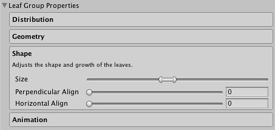

Leaf Group Properties
Leaf groups generate leaf geometry. Either from primitives or from user created meshes.
Distribution
Adjusts the count and placement of leaves in the group. Use the curves to fine tune position, rotation and scale. The curves are relative to the parent branch.

| Group Seed | The seed for this group of leaves. Modify to vary procedural generation. |
| Frequency | Adjusts the number of leaves created for each parent branch. |
| Distribution | Select the way the leaves are distributed along their parent. |
| Twirl | Twirl around the parent branch. |
| Whorled Step | Defines how many nodes are in each whorled step when using Whorled distribution. For real plants this is normally a Fibonacci number. |
| Growth Scale | Defines the scale of nodes along the parent node. Use the curve to adjust and the slider to fade the effect in and out. |
| Growth Angle | Defines the initial angle of growth relative to the parent. Use the curve to adjust and the slider to fade the effect in and out. |
Geometry
Select what type of geometry is generated for this leaf group and which materials are applied. If you use a custom mesh, its materials will be used.

| Geometry Mode | The type of geometry created. You can use a custom mesh, by selecting the Mesh option, ideal for flowers, fruits, etc. |
| Material | Material used for the leaves. |
| Mesh | Mesh used for the leaves. |
Shape
Adjusts the shape and growth of the leaves.

| Size | Adjusts the size of the leaves, use the range to adjust the minimum and the maximum size. |
| Perpendicular Align | Adjusts whether the leaves are aligned perpendicular to the parent branch. |
| Horizontal Align | Adjusts whether the leaves are aligned horizontally. |
Animation
Adjusts the parameters used for animating this group of leaves. Wind zones are only active in Play Mode. If you select too high values for Main Wind and Main Turbulence the leaves may float away from the branches.

| Main Wind | Primary wind effect. Usually this should be kept as a low value to avoid leaves floating away from the parent branch. |
| Main Turbulence | Secondary turbulence effect. For leaves this should usually be kept as a low value. |
| Edge Turbulence | Defines how much wind turbulence occurs along the edges of the leaves. |
Page last updated: 2011-10-29